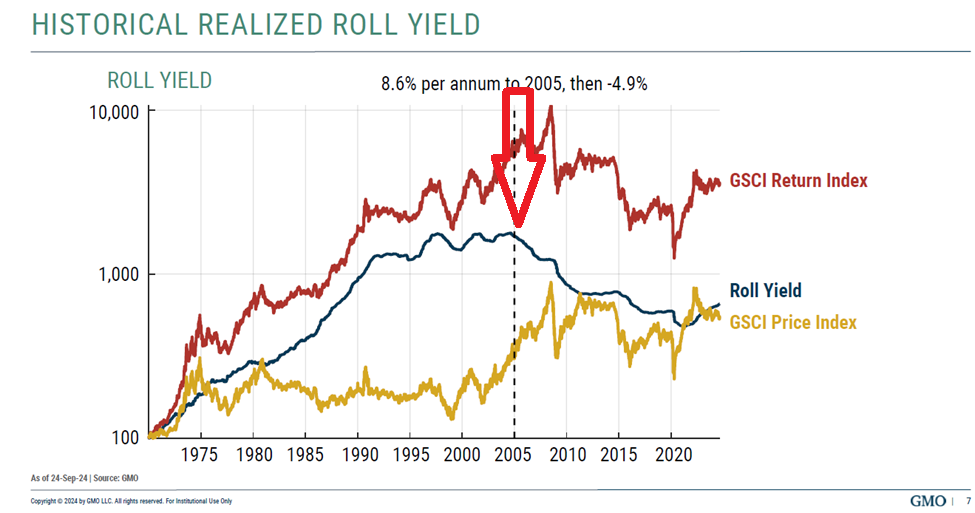
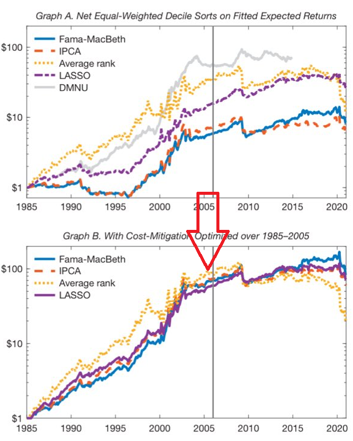
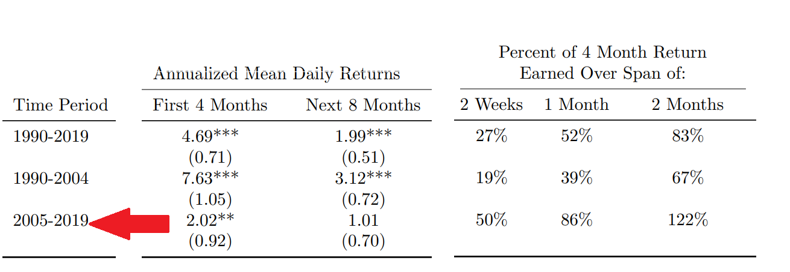
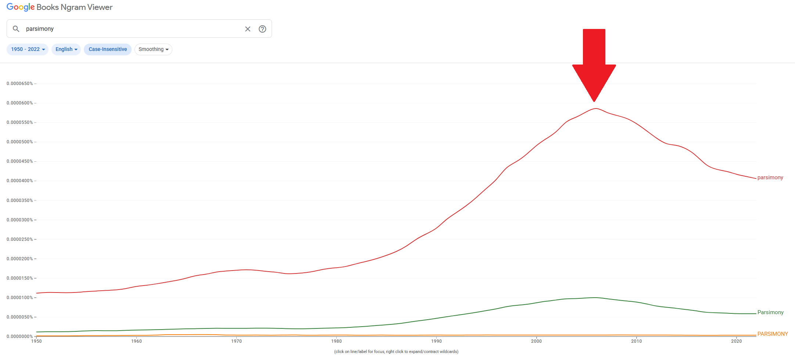
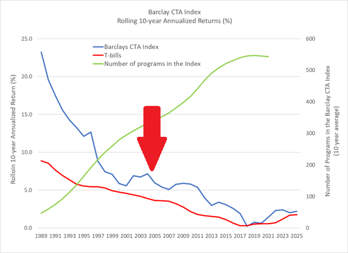

Historical Realized Roll Yield

Stockmarket Anomalies

Anomaly Returns After Discovery

Searches For Parsimony

Trendfollowing Returns

"FF's size and value factors are not beautiful nor theoretically well-founded.
And they fail
to explain most anomalies."
- Andrew Chen [1]